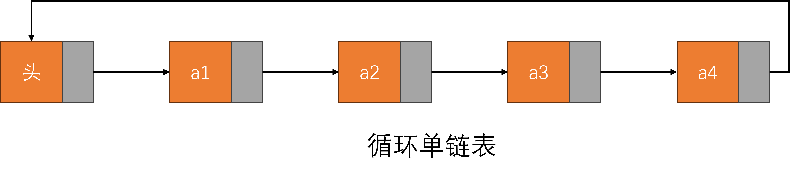
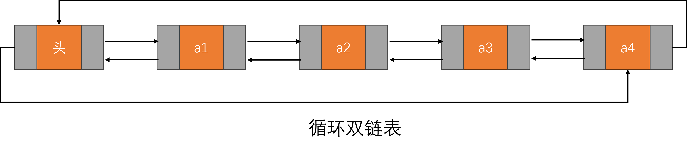
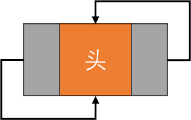

线性表的链式存储结构，也称为单链表，是指通过一组任意的存储单元来存储线性表中的数据元素的数据结构。为了维护数据元素之间的线性关系，每个链表结点不仅包含元素自身的信息，还包含一个指向其后继结点的指针。（即，各结点间的先后关系通过指针来表示）
单链表结点的结构如下图所示：
data（数据域）：用于存放数据元素的值。next（指针域）：用于存放后继结点的地址。这种结构使得单链表可以动态地分配内存，不需要事先确定数据元素的数量，并且在插入和删除操作时，能够灵活地调整数据元素的存储位置。
优点
O(1)。缺点
O(n)，不如数组的随机访问效率高。从前向后遍历，逆向遍历较为困难，需要额外的数据结构（如双链表）或额外的存储来记录遍历路径。总的来说，单链表适用于需要频繁插入和删除操作的应用场景，但在需要快速随机访问元素的情况下，效率不如数组。
带头结点的单链表和不带头结点的单链表之间有一些关键的区别，主要体现在结构和操作上：
带头结点的单链表
定义：
头结点, 不直接存储数据，主要用于简化链表操作。优点：
头部时不需要特殊处理。为空。缺点：
头结点增加了内存消耗。不带头结点的单链表
定义：
数据, 没有头结点。优点：
头结点, 节省内存。缺点：
为空或在头部进行插入和删除时需要特别处理，代码可能更复杂。总结
选择使用带头结点或不带头结点的单链表，主要取决于具体应用场景和需求。如果希望简化操作并统一处理，带头结点的链表更为适合；如果内存限制较为严格且链表操作相对简单，则不带头结点的链表可能更优。
在单链表数据结构中，头结点（head node）和头指针（head pointer）是两个容易混淆但又各自不同的重要概念。让我们详细解释它们的定义和容易混淆的点。
头结点（Head Node）
头结点是指链表中的第一个结点，通常存储链表中的第一个元素的数据。在链表结构中，头结点本身就是一个结点，包含数据域和指向下一个结点的指针（即next指针）。
头指针（Head Pointer）
头指针是一个指针变量，它指向链表的第一个结点（即头结点）。头指针本身不存储链表的数据，它只是一个指针，用于存储头结点的地址，以便能够访问链表。
总结：不管带不带头结点，头指针始终指向链表的第一个结点，而头结点是带头结点链表中的第一个结点，结点内通常不存储信息。
链表是一种灵活的数据结构，具有许多扩展和变体，适用于不同的应用场景。
双向链表的每个结点有两个指针，分别指向前一个结点和后一个结点，可以更方便地在两端进行插入和删除操作，支持从后向前遍历。
循环链表的最后一个结点的指针指向链表的头结点, 形成一个闭环，处理某些需要持续遍历的场景时可以避免空指针异常。
静态链表使用数组模拟链表结构，通过下标进行链接，在内存管理上更简单，不需要动态分配内存，适用于结点数固定的场合。
链表的扩展形式丰富多样，选择合适的链表类型可以提高算法效率和实现的灵活性，适应不同的数据处理需求。
// 设置别名
typedef int Elemtype;
// 定义单链表结点结构体
typedef struct LNode {
Elemtype data; // 数据部分，可以根据实际需要定义不同类型的数据
struct LNode *next; // 指针部分，指向下一个结点的地址
} LNode, *LinkList;
在这个结构体中，data 是存储结点数据的变量，next 是一个指向 struct LNode 类型的指针，它指向链表中的下一个结点。通过这种方式，每个结点就能够存储自己的数据，并且通过 next 指针链接到下一个结点，从而形成一个链表。
typedef 是C语言中的一个关键字，用于为已有数据类型定义新的别名。它的主要作用是增强代码的可读性和易用性，特别是在处理复杂的数据结构时，如结构体或者函数指针等。
单链表结点定义时，为什么要使用 typedef？
在单链表结点的定义中，使用 typedef 的主要原因有两点：
struct LNode 和指向该结构体的指针 struct LNode * 是比较冗长的。使用 typedef 可以为 struct LNode 定义一个更简洁的别名 LNode，使得代码更加清晰和简洁。typedef，可以将数据类型的实现与其名称分离开来。这样一来，如果需要修改数据类型或者在多个文件中使用相同的数据类型时，只需修改一处 typedef 定义即可，提高了代码的维护性和可重用性。
typedef 的语法
typedef 的语法格式如下：
typedef existing_type new_type_name;
existing_type 是已有的数据类型，可以是基本数据类型（如 int, float 等），也可以是自定义的结构体、枚举类型等。new_type_name 是为 existing_type 定义的新的别名。LNode VS LinkList在这段代码中，LNode和*LinkList有不同的含义和用途：
LNode：
结构体类型，表示单链表中的一个结点。定义了结点的data（数据部分）和next（指向下一个结点的指针）。LinkList：
LNode类型的指针类型。它代表了一个指向链表的指针，可以用来方便地操作链表，比如创建、插入、删除等。总结
LNode是结点的具体类型，而*LinkList是一个指向该类型的指针，通常用来表示整个链表的头指针。
带头结点的单链表和不带头结点的单链表的区别如下：
带头结点的单链表：
不带头结点的单链表：
单链表的结构体通常包含一个数据域和一个指向下一个结点的指针。每个结点的结构体通常如下定义：
// ============================预处理信息============================
typedef int bool; // C语言没有bool类型，使用int模拟，0为false，非0为true
#define true 1 // 定义true为1
#define false 0 // 定义false为0
typedef int ElemType; // 定义链表数据类型为int
// ============================单链表结点结构定义============================
typedef struct LNode {
ElemType data; // 数据
struct LNode *next; // 指向下一个结点
} LNode, *LinkList; // LNode为结点类型，LinkList为结点指针类型
解释：
bool 类型，因此用 typedef int bool; 定义，同时定义0 表示 false，非零值（如 1）表示 true，以此模拟布尔类型。ElemType 用于指定链表的数据类型，默认为 int，可以根据需要修改。LNode 结构体表示链表结点，包含数据域 data 和指针 next，用于链接下一个结点。LinkList 是指向链表头结点的指针类型，便于操作链表。函数名称：bool initList(LinkList *L)
函数功能：初始化一个带头结点的单链表。
函数思路：
内存分配是否成功，若失败则返回false。 next指针指向NULL。 true。注意事项：
指向链表的指针，其本质是一个二级指针，即LNode **L。判断是否分配成功。定义变量即初始化的原则，将头结点的data域初始化为0。使用二级指针的原因
L是一个指向指针的指针，对L的操作会改变L指向的地址的内容。*L是指向链表的头指针，即头结点的地址，对*L的操作会改变头结点的内容。*L的内容，从而改变外部指针L指向的地址的内容。LinkList L（即LNode *L），即直接传递指针，那么只能改变指针的内容，无法改变指针指向的地址的内容。/**
* @brief 初始化带头结点的单链表
* @param LinkList *L 指向链表头指针的指针
* @return bool 成功返回true，失败返回false
*/
bool initList(LinkList *L)
{
printf("[INFO] initList()函数被调用...\n");
*L = (LinkList)malloc(sizeof(LNode)); // 生成头结点
if(NULL == *L)
{
printf("[ERROR] 初始化链表失败！ErrorText: 在堆上分配内存失败！\n");
return false;
}
printf("[INFO] 初始化链表成功！\n");
(*L)->data = 0; // 头结点不存储数据,但初始化为0
(*L)->next = NULL;
return true;
}
函数名称：bool destroyList(LinkList *L)
函数功能：销毁一个带头结点的单链表。
函数思路：
有效（即L和*L是否为NULL），如果无效则返回false。两个临时指针p和q，p指向头结点，q用于释放结点。循环遍历链表，释放每个结点的内存空间。置为NULL。返回true。注意：
释放每个结点的内存空间，否则会造成内存泄漏。将首元素从链表中断开，原位于首元素之后的元素成为新的首元素，然后释放原首元素的内存，如此循环。将头结点的内存空间也释放掉，同时将头指针置为NULL，否则在链表最终被销毁后，会导致有一块分配到堆区的内存空间没有被释放，造成内存泄漏。O(n)，其中n为链表的长度，空间复杂度为O(1)。initList()函数的说明，简而言之，initList()函数和destoryList()函数都需要对指向链表的指针进行操作，所以参数必须是指向“指向链表的指针”的指针，而其他函数如printList()、insertList()等只需要对链表进行访问或操作，所以参数只需要是指向链表的指针即可。/**
* @brief 销毁链表
* 销毁一个带头结点的单链表
* @param LinkList *L
* 指向链表的指针
* @return bool
* true: 销毁成功
* false: 销毁失败
*/
bool destroyList(LinkList *L)
{
printf("[INFO] destroyList()函数被调用...\n");
if(NULL == L || NULL == *L)
{
printf("[ERROR] 销毁链表失败！ErrorText: 链表不存在！\n");
return false;
}
LinkList p = *L; // 创建临时指针p指向头结点
LinkList q = NULL; // 创建临时指针q
while(p->next != NULL) // 循环遍历链表
{
q = p->next; // q指向第一个元素
p->next = q->next; // 断链操作，将首元素从链表中断开，头结点p指向第二个元素
free(q); // 释放原首元素q的内存空间
}
free(*L); // 释放头结点的内存空间
*L = NULL;
printf("[INFO] 销毁链表成功！\n");
return true;
}
函数名称：bool printList(const LinkList L)
函数功能：本函数用于打印一个带头结点的单链表。
函数思路：
有效，即L是否为NULL，如果无效则返回false。临时指针p指向链表中的第一个元素。循环遍历链表，打印每个元素的值。返回true。注意：
链表是否存在，否则有可能会导致空指针异常。O(n)，其中n为链表的长度，空间复杂度为O(1)。const LinkList L表示传递的是一个常量指针，使用LinkList而不是LNode *L是为了增加代码的可读性，且传递指针可节省内存空间，而用const修饰表示不允许修改指针指向的内容，这样可以避免误操作。/**
* @brief 打印链表
* 打印一个带头结点的单链表
* @param const LinkList L
* 链表
* @return bool
* true: 打印成功
* false: 打印失败
*/
bool printList(const LinkList L)
{
printf("[INFO] printList()函数被调用...\n");
if(NULL == L)
{
printf("[ERROR] 打印链表失败！ErrorText: 链表不存在！\n");
return false;
}
LinkList p = L->next; // 创建临时指针p指向链表中的第一个元素
printf("[INFO] 链表元素：[HNode]-->"); // 打印头结点
while(p != NULL)
{
printf("[%d]-->", p->data);
p = p->next;
}
printf("[NULL]\n");
return true;
}
函数名称：bool isEmpty(const LinkList L)
函数功能：本函数用于判断一个带头结点的单链表是否为空。
函数思路：
链表是否有效，即L是否为NULL，如果无效则返回true。链表的第一个元素是否为NULL，如果是则返回true，否则返回false。注意：
空指针异常。O(1)，空间复杂度为O(1)。/**
* @brief 判断链表是否为空
* 判断一个带头结点的单链表是否为空
* @param const LinkList L
* 链表
* @return bool
* true: 链表为空
* false: 链表不为空
*/
bool isEmpty(const LinkList L)
{
printf("[INFO] isEmpty()函数被调用...\n");
if(NULL == L || NULL == L->next)
{
printf("[INFO] 链表不存在或为空！\n");
return true;
}
else
{
printf("[INFO] 链表不为空！\n");
return false;
}
}
函数名称：int length(const LinkList L)
函数功能：本函数用于求一个带头结点的单链表的长度。
函数思路
链表是否存在，如果不存在则返回-1。变量len用于存储链表的长度，初始化为0。临时指针p指向链表中的第一个元素。len加1。len。注意
O(n)，其中n为链表的长度，空间复杂度为O(1)。/**
* @brief 求链表长度
* 求一个带头结点的单链表的长度
* @param const LinkList L
* 链表
* @return int
* 链表的长度
*/
int length(const LinkList L)
{
printf("[INFO] length()函数被调用...\n");
if(NULL == L)
{
printf("[ERROR] 求链表长度失败！ErrorText: 链表不存在！\n");
return -1;
}
int len = 0;
LinkList p = L->next;
while(NULL != p)
{
len++;
p = p->next;
}
printf("[INFO] 链表长度为：%d\n", len);
return len;
}
函数名称：LNode* createNewNode(ElemType e)
函数功能：本函数用于创建一个新结点。
函数思路
堆上分配内存生成一个新结点。生成新结点是否成功，如果失败则返回NULL。数据域赋值为e，指针域赋值为NULL。新结点指针。注意
失败的可能，所以需要判断是否分配成功。next指针最好初始化为NULL，这样符合指针创建即初始化的原则。/**
* @brief createNewNode
* 创建新结点
* @param e
* 结点数据
* @return
* 成功：返回新结点指针
* 失败：返回NULL
*/
LNode* createNewNode(ElemType e)
{
printf("[INFO] createNewNode()函数被调用...\n");
LNode *node = (LNode *)malloc(sizeof(LNode));// 在堆上分配内存
if(NULL == node)
{
printf("[ERROR] 创建新结点失败！ErrorText: 在堆上分配内存失败！\n");
return NULL;
}
node->data = e;
node->next = NULL;
return node;
}
函数名称：bool insertNextNode(LNode *p, ElemType e)
函数功能：本函数用于在指定结点后插入结点。
函数思路
指定结点是否存在，如果不存在则返回false。判断是否创建成功，如果创建失败则返回false。新结点的next指针指向指定结点的后继节点。指定结点的next指针指向新结点。true。注意
LNode *类型，即指向结点的指针，表示指定结点，此处使用指针的原因是为了在函数内部改变指定结点的指针域的内容。让指定结点的后继结点成为新结点的后继结点(即将指定结点的next域赋值给新结点的next域)，然后再让新结点成为指定结点的后继结点(即将新结点的地址赋值给指定结点的next域)，二者顺序不能颠倒，否则会导致链表断裂。O(1)，空间复杂度为O(1)。/**
* @brief insertNextNode
* 在指定结点后插入结点
* @param p
* 指定结点
* @param e
* 结点数据
* @return bool
* true: 插入成功
* false: 插入失败
*/
bool insertNextNode(LNode *p, ElemType e)
{
printf("[INFO] insertNextNode()函数被调用...\n");
if(NULL == p)
{
printf("[ERROR] 插入结点失败！ErrorText: 指定结点不存在！\n");
return false;
}
LNode *newNode = createNewNode(e);
if(NULL == newNode)
{
printf("[ERROR] 插入结点失败！ErrorText: 创建新结点失败！\n");
return false;
}
// 插入结点，注意顺序不能颠倒
newNode->next = p->next;
p->next = newNode;
printf("[INFO] 插入结点成功！\n");
return true;
}
函数名称：bool insertPriorNode(LNode *p, ElemType e)
函数功能：本函数用于在指定结点前插入结点。
函数思路
指定结点是否存在，如果不存在则返回false。是否创建成功，如果创建失败则返回false。以后插法插入新结点，再交换数据。true。注意
找到指定结点的前驱结点，然后在前驱结点后插入新结点，此法时间复杂度为O(n)，不推荐使用。在指定结点后插入新结点，然后交换指定结点和新结点的数据，时间复杂度为O(1)。/**
* @brief insertPriorNode
* 在指定结点前插入结点
* @param p
* 指定结点
* @param e
* 结点数据
* @return bool
* true: 插入成功
* false: 插入失败
*/
bool insertPriorNode(LNode *p, ElemType e)
{
printf("[INFO] insertPriorNode()函数被调用...\n");
// 合法性检查
if(NULL == p)
{
printf("[ERROR] 插入结点失败！ErrorText: 指定结点不存在！\n");
return false;
}
// 创建新结点
LNode *newNode = createNewNode(e);
if(NULL == newNode)
{
printf("[ERROR] 插入结点失败！ErrorText: 创建新结点失败！\n");
return false;
}
// 先以后插法插入新结点，再交换数据
newNode->next = p->next;
p->next = newNode;
ElemType temp = p->data;// 临时变量temp用于交换
p->data = newNode->data;
newNode->data = temp;
printf("[INFO] 插入结点成功！\n");
return true;
}
函数名称：LNode* getElem(LinkList L, int i)
函数功能：本函数用于按位查找链表中的元素。
函数思路
链表是否存在，如果不存在则返回NULL。位置i是否合法，如果不合法则返回NULL。头结点，即i=0时，直接返回头结点。临时指针p指向链表中的第一个元素，创建一个变量pos用于记录当前遍历的元素位序。找到第i个元素，如果没有找到则返回NULL。该结点的指针。注意
/**
* @brief getElem
* 按位查找
* @param LinkList L
* 链表
* @param int i
* 位置
*/
LNode* getElem(LinkList L, int i)
{
printf("[INFO] getElem()函数被调用...\n");
printf("[INFO] 尝试获取链表的第%d个元素...\n", i);
// 合法性检查
if(NULL == L)
{
printf("[ERROR] 获取结点失败！ErrorText: 链表不存在！\n");
return NULL;
}
if(i < 0)
{
printf("[ERROR] 获取结点失败！ErrorText: 位置i非法（小于0）！\n");
return NULL;
}
// 特殊情况：获取头结点
if(0 == i)
{
printf("[INFO] 待查找位置为0，即头结点！\n");
return L;
}
// 遍历链表，直到找到第i个元素
LNode *p = L->next; // 创建临时指针p指向链表中的第一个元素
int pos = 1; // 创建变量pos用于记录当前遍历的元素位序
while(NULL != p && pos < i) // 遍历链表
{
p = p->next;
pos++;
}
// 判断是否找到第i个元素
if(NULL == p)
{
printf("[ERROR] 获取结点失败！ErrorText: 未找到第%d个元素！\n", i);
return NULL;
}
printf("[INFO] 获取结点成功！结点数据为：%d\n", p->data);
return p;
}
函数名称：LNode* locateElem(LinkList L,int *i, ElemType e)
函数功能：本函数用于按值查找链表中的元素。
函数思路
合法性检查，判断链表是否存在，如果不存在则返回NULL。临时指针p指向链表中的第一个元素，创建一个变量pos用于记录当前遍历的元素位序。数据域为e的元素。找到数据域为e的元素，如果没有找到则返回NULL。数据域为e的元素后，返回该结点的指针。注意
O(n)，其中n为链表的长度，空间复杂度为O(1)。/**
* @brief locateElem
* 按值查找
* @param LinkList L
* 链表
* @param int *i
* 位置
* @param ElemType e
* 结点数据
* @return LNode*
* 要查找的结点的指针，如果查找失败则返回NULL
*/
LNode* locateElem(LinkList L,int *i, ElemType e)
{
printf("[INFO] locateElem()函数被调用...\n");
printf("[INFO] 尝试查找链表中数据为%d的元素...\n", e);
// 合法性检查
if(NULL == L)
{
printf("[ERROR] 查找结点失败！ErrorText: 链表不存在！\n");
return NULL;
}
// 创建临时指针p指向链表中的第一个元素
LNode *p = L->next;
int pos = 1; // 创建变量pos用于记录当前遍历的元素位序
// 遍历链表，直到找到数据域为e的元素
while(NULL != p && p->data != e)
{
p = p->next;
pos++;
}
// 判断是否找到数据域为e的元素
if(NULL == p)
{
printf("[ERROR] 查找结点失败！ErrorText: 未找到数据域为%d的元素！\n", e);
return NULL;
}
*i = pos;
printf("[INFO] 查找结点成功！结点位序为：%d\n", pos);
return p;
}
函数名称：bool insertList(LinkList L, int i, ElemType e)
函数功能：本函数是常用的插入操作，即在指定位置i后插入结点。
函数思路
合法性检查，判断链表是否存在，如果不存在则返回false。位置i是否合法，如果不合法则返回false。getElem()函数查找第i-1个元素，即指定结点的前驱结点，如果找不到则返回false。insertNextNode()函数插入新结点。注意
O(1),但按位插入需要遍历链表，所以时间复杂度为O(n)，其中n为链表的长度。O(1)。在表尾插入新元素，但不允许在超过链表长度+1的位置插入新元素，否则会导致链表断裂。/**
* @brief insertList
* 常用的插入操作（后插）
* @param L
* 链表
* @param i
* 位置
* @param e
* 结点数据
* @return bool
* true: 插入成功
* false: 插入失败
*/
bool insertList(LinkList L, int i, ElemType e)
{
printf("[INFO] insertList()函数被调用...\n");
printf("[INFO] 尝试在链表的第%d个位置插入数据%d...\n", i, e);
// 合法性检查
if(NULL == L)
{
printf("[ERROR] 插入结点失败！ErrorText: 链表不存在！\n");
return false;
}
if(i < 1)
{
printf("[ERROR] 插入结点失败！ErrorText: 位置i非法（小于1）！\n");
return false;
}
LNode *p = getElem(L, i - 1); // 获取第i-1个元素
// 判断是否找到第i-1个元素
if(NULL == p)
{
printf("[ERROR] 插入结点失败！ErrorText: 位置i非法（大于链表长度+2）！\n");
return false;
}
// 调用insertNextNode()函数插入新结点
return insertNextNode(p, e);
}
函数名称：bool insertListByForward(LinkList L, int i, ElemType e)
函数功能：本函数是常用的前插操作，即在指定位置i以前插方式插入结点。
函数思路
合法性检查，判断链表是否存在，如果不存在则返回false。位置i是否合法，如果不合法则返回false。getElem()函数查找第i个元素，即指定结点，如果找不到则返回false。insertPriorNode()函数插入新结点。注意
O(1),但按位插入需要遍历链表，所以时间复杂度为O(n)，其中n为链表的长度。O(1)。在表尾插入新元素，因为定位第i位元素时，会定位到NULL，从而无法找到第i-1位元素。但是稍微修改一下逻辑，即当第i-1位元素存在但第i位元素不存在时，即第i位为表尾，此时调用insertNextNode()函数即可插入到表尾。/**
* @brief insertListByForward
* 常用的前插操作
* @param L
* 链表
* @param i
* 位置
* @param e
* 结点数据
* @return bool
* true: 插入成功
* false: 插入失败
*/
bool insertListByForward(LinkList L, int i, ElemType e)
{
printf("[INFO] insertListByForward()函数被调用...\n");
printf("[INFO] 尝试在链表的第%d个位置前插入数据%d...\n", i, e);
// 合法性检查
if(NULL == L)
{
printf("[ERROR] 插入结点失败！ErrorText: 链表不存在！\n");
return false;
}
if(i < 1)
{
printf("[ERROR] 插入结点失败！ErrorText: 位置i非法（小于1）！\n");
return false;
}
// 查找第i-1个元素
LNode *p = getElem(L, i - 1);
if(NULL == p)
{
printf("[ERROR] 插入结点失败！ErrorText: 位置i非法（大于链表长度+2）！\n");
return false;
}
// 如果第i-1个元素p存在但是p->next不存在，说明p是最后一个元素
// 则第i位为表尾，此时调用insertNextNode()函数即可插入到表尾
if(NULL == p->next)
{
return insertNextNode(p, e);
}
return insertPriorNode(p->next, e);
}
函数名称：bool removeNode(LinkList L, int i, ElemType *e)
函数功能：本函数用于删除链表中的第i个结点。
函数思路
合法性检查，判断链表是否存在，如果不存在则返回false。位置i是否合法，如果不合法则返回false。getElem()函数查找第i-1个元素，即指定结点的前驱结点，如果找不到则返回false。待删除结点的数据保存到*e中，再将其后继结点的地址赋值给前驱结点的next指针。释放待删除结点的内存空间，删除成功返回true。注意
释放结点的内存空间，否则会造成内存泄漏。O(n)，其中n为链表的长度，空间复杂度为O(1)。/**
* @brief removeNode
* 删除结点
* @param L
* 链表
* @param i
* 位置
* @param e
* 结点数据
* @return bool
* true: 删除成功
* false: 删除失败
*/
bool removeNode(LinkList L, int i, ElemType *e)
{
printf("[INFO] removeNode()函数被调用...\n");
printf("[INFO] 尝试删除链表的第%d个结点...\n", i);
// 合法性检查
if(NULL == L || NULL == e)
{
printf("[ERROR] 删除结点失败！ErrorText: 链表不存在或e不存在！\n");
return false;
}
if(i < 1)
{
printf("[ERROR] 删除结点失败！ErrorText: 位置i非法（小于1）！\n");
return false;
}
// 查找第i-1个元素
LNode *p = getElem(L, i - 1);
if(NULL == p || NULL == p->next)
{
printf("[ERROR] 删除结点失败！ErrorText: 位置i非法（大于链表长度）！\n");
return false;
}
// 删除结点
LNode *q = p->next;
*e = q->data;
p->next = q->next;
free(q);
printf("[INFO] 删除结点成功！\n");
return true;
}
函数名称：bool setNode(LinkList L, int i, ElemType e)
函数功能：本函数用于修改链表中的第i个结点的数据。
函数思路
合法性检查，判断链表是否存在，如果不存在则返回false。位置i是否合法，如果不合法则返回false。getElem()函数查找第i个元素，如果找不到则返回false。修改结点数据，修改成功返回true。注意
O(n)，其中n为链表的长度，空间复杂度为O(1)。/**
* @brief setNode
* 修改结点数据
* @param L
* 链表
* @param i
* 位置
* @param e
* 结点数据
* @return bool
* true: 修改成功
* false: 修改失败
*/
bool setNode(LinkList L, int i, ElemType e)
{
printf("[INFO] setNode()函数被调用...\n");
printf("[INFO] 尝试修改链表的第%d个结点的数据为%d...\n", i, e);
// 合法性检查
if(NULL == L)
{
printf("[ERROR] 修改结点失败！ErrorText: 链表不存在！\n");
return false;
}
if(i < 1)
{
printf("[ERROR] 修改结点失败！ErrorText: 位置i非法（小于1）！\n");
return false;
}
// 查找第i个元素
LNode *p = getElem(L, i);
if(NULL == p)
{
printf("[ERROR] 修改结点失败！ErrorText: 位置i非法（大于链表长度）！\n");
return false;
}
// 修改结点数据
p->data = e;
printf("[INFO] 修改结点成功！\n");
return true;
}
/**
* @class LNode
* @brief 单链表结点类模板
* @tparam T 数据类型
* @code
* LNode<int> *node = new LNode<int>(10);
* LNode<int> *node = new LNode<int>();
* @endcode
*/
template <class T>
class LNode
{
public:
LNode() : data(0), next(NULL) {};
LNode(T e) : data(e), next(NULL) {};
~LNode() {};
T data;
LNode *next;
};
这段代码定义了一个名为 LNode 的单链表节点类模板，用于表示单链表中的节点。模板参数 T 允许存储任意类型的数据。每个节点包含以下两个成员：
data：类型为 T，表示存储在节点中的数据。next：指向下一个节点的指针，用于连接单链表中的其他节点。此外，该类提供了以下构造函数和析构函数：
0，指针 next 初始化为 NULL。T 的参数 e，用于初始化数据成员 data，指针 next 仍初始化为 NULL。清理对象。/**
* @class LinkList
* @brief 单链表类模板
* @tparam T 数据类型
* @code
* LinkList<int> *list = new LinkList<int>();
* @endcode
*/
template <class T>
class LinkList
{
public:
LinkList():m_head(nullptr), m_len(0) {}; // 构造函数，初始化头指针为空
~LinkList() {destroyList();}; // 析构函数，销毁链表
/*
...相关操作函数
*/
private:
LNode<T> *m_head; // 头指针
int m_len; // 链表长度（可选）
};
LinkList 是一个单链表的类模板，用于动态管理链表节点。模板参数 T 指定链表中存储的数据类型。
类的主要功能
m_head 置为NULL，长度 m_len 置为 0。成员变量
m_head：指向链表头节点的指针。m_len：记录链表中节点的数量。该类设计简洁，适合动态存储和操作数据，后续可以根据需要扩展功能。
函数名称：template<class T> bool LinkList<T>::initList()
函数功能：本函数用于初始化一个不带头结点的单链表。
函数步骤：
链表是否已经初始化(即头指针是否为空)，若已经初始化，则返回false；直接置为空即可；0，初始化成功返回true。注意：
将头指针置为空即可，其时间复杂度为O(1)。/**
* @brief LinkList::initList 初始化链表
* @param 无
* @return bool
* true: 初始化成功
* false: 初始化失败
*/
template<class T>
bool LinkList<T>::initList()
{
cout << "【INFO】initList()函数被调用！" << endl;
if(NULL != m_head)
{
cout << "【ERROR】链表已经初始化！" << endl;
return false;
}
m_head = NULL;
m_len = 0;
cout << "【INFO】链表初始化成功！" << endl;
return true;
}
函数名称：template<class T> bool LinkList<T>::destroyList()
函数功能：本函数用于销毁一个不带头结点的单链表。
函数步骤：
临时指针p指向头指针、临时指针q用于记录p的下一个结点；遍历链表，释放每个结点；头指针置为空，链表长度置为0，销毁成功返回true。注意：
len记录链表长度，所以销毁链表时，也可以通过len来判断链表是否为空。头指针是否为空，因为头指针为空表示其指向的是一个空表。O(n)。/**
* @brief LinkList::destroyList 销毁链表
* @param 无
* @return bool
* true: 销毁成功
* false: 销毁失败
*/
template<class T>
bool LinkList<T>::destroyList()
{
cout << "【INFO】destroyList()函数被调用！" << endl;
LNode<T> *p = m_head; // 临时指针p指向头指针
LNode<T> *q = NULL; // 临时指针q用于记录p的下一个结点
while (NULL != p) // 遍历链表，释放每个结点
{
q = p->next;
delete p;
p = q;
}
m_head = NULL; // 将头指针置为空
m_len = 0; // 将链表长度置为0
cout << "【INFO】链表销毁成功！" << endl;
return true;
}
单链表的局限：
单链表只能从头结点到尾结点进行单向遍历，不能反向遍历。这导致在某些需要频繁访问前驱结点的操作中效率较低。此外，在单链表中插入或删除一个结点时，若需要访问前驱结点，也较为不便。
双链表的定义：
双链表是一种链表结构，其中每个结点包含三个部分：一个存储数据的字段，一个指向前驱结点的指针，以及一个指向后继结点的指针。通过这两个指针，可以实现从任一结点向前和向后的双向遍历。


双链表 V.S. 单链表：
双链表与单链表的主要区别在于双链表的结点包含两个指针，一个指向前一个结点，一个指向后一个结点。这使得双链表可以进行双向遍历，更加灵活。在插入和删除操作中，双链表也更为方便，因为可以直接访问前驱结点。然而，双链表比单链表占用更多的内存，因为每个结点需要额外存储一个指针（存储密度更低）。
在C语言中，双链表结点的结构体定义通常如下：
// 定义双链表结点的结构体
typedef struct DNode {
ElemType data; // 存储数据的字段
struct DNode* prev; // 指向前一个结点的指针
struct DNode* next; // 指向后一个结点的指针
} DNode, *DLinkList;
代码描述：
typedef struct 关键字定义一个名为 DNode 的结构体。（D指Double）ElemType 类型的字段 data，用于存储结点的数据。DNode 结构体类型的指针 prev，用于指向前一个结点。DNode 结构体类型的指针 next，用于指向后一个结点。typedef 关键字，将 struct DNode 重命名为 DNode，并将 struct DNode* 重命名为 DLinkList，方便在代码中使用。通过这种定义方式，可以更简洁地使用 DNode 和 DLinkList 类型，而无需每次都写出完整的 struct 关键字。


循环链表是一种链表结构，其中链表的最后一个结点指向头结点，形成一个环状结构。循环链表的相关概念可以大方向上分为循环单链表和循环双链表，它们的区别主要在于结点之间的链接方式。
定义
链表的头结点，形成一个闭环。也就是说，从表中任意一个结点出发，都可以找到表中的其他任何结点，从头结点找到尾结点的时间复杂度为O(n)，但从尾结点找到头结点的时间复杂度为O(1)。特点
单向链接：每个结点只有一个指向下一个结点的指针。循环：最后一个结点指向头结点，形成循环。没有尾结点指针：没有单独的指向尾结点的指针，尾结点的指针指向头结点。应用
约瑟夫问题：经典的环形结构问题，循环链表用于模拟这些情形。资源管理：如处理任务队列，保证任务按顺序处理且循环进行。定义
后继指针指向头结点，头结点的前驱指针指向尾结点，形成一个双向循环。特点
双向链接：每个结点包含两个指针，一个指向下一个结点，一个指向前一个结点。循环：头结点的前驱指针指向尾结点，尾结点的后继指针指向头结点。尾结点与头结点相连：在循环链表中，头结点与尾结点有相互连接的指针。应用
双向队列：双向链表的特性适合实现双向队列（Deque）。内存管理：如操作系统中的进程调度和内存分配。优点
不浪费空间：链表是动态的，可以有效利用内存空间。环形特性：适用于需要循环或重复访问数据的应用场景。灵活的插入和删除操作：插入和删除操作无需移动其他元素，只需要修改指针即可。缺点
复杂的指针管理：需要小心管理指针，避免产生死循环。遍历较为麻烦：相较于普通链表，循环链表的遍历需要特殊处理，避免陷入死循环。总结来说，循环单链表和循环双链表都具有循环结构，区别在于结点是否具有双向指针，循环单链表适用于简单的循环场景，而循环双链表适合需要双向遍历的场景。
注：本节讨论的代码，都是带头结点的循环单链表。
增加头结点的优点如下：
首结点的插入和删除操作与其他结点一致，无需进行特殊处理。一个头结点，因此统一了空表和非空表的处理过程。可以通过传入一个初始值，创建一个包含一个头节点的循环单链表。此时，节点的 next 指针指向自己，形成一个环。
// 初始化循环单链表，返回头结点
Node* InitList() {
Node* head = (Node*)malloc(sizeof(Node));
if (!head) exit(1); // 分配失败
head->next = head; // 自循环
return head;
}
判断循环单链表是否为空，可以通过检查表头结点的指针是否指向自己来进行判断:
int IsEmpty(Node* head) {
return head->next == head;
}
表头判断：表头节点就是指向第一个节点的指针，直接比较节点 p 与 head 即可。
表尾判断：表尾节点是指向头节点的节点，因此如果 p->next == head ，则说明该节点是表尾。
int IsHead(Node* head, Node* p) {
return head == p;
}
int IsTail(Node* head, Node* p) {
return p->next == head;
}
